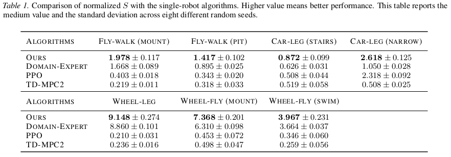
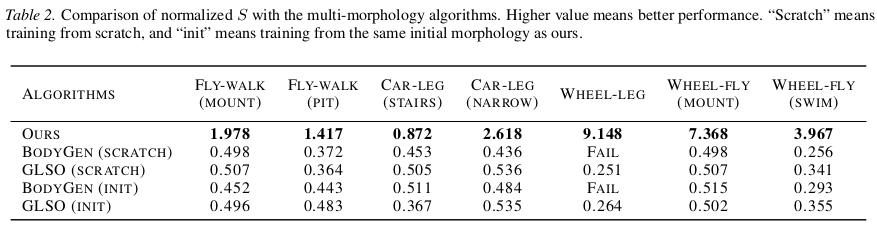
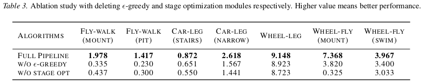
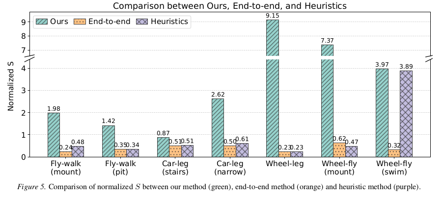

Traditional robot co-design approaches typically converge to one configuration, which do not explore the flexibility from reconfiguration on heterogeneous environments. On the other hand, existing designs for reconfigurable robots require human-designed configurations. We present Learning to Reconfigure, a holistic pipeline for configuration-control co-optimization of reconfigurable robots in heterogeneous locomotion tasks consisting of several sub-tasks. Our pipeline proposes low-level specialized primitives with a high-level scheduler. To jointly optimize configuration design and control, our primitives employ a multi-tail architecture that disentangles these distinct objectives. Building on this, the scheduler learns to dynamically switch configurations based on global task progress. We evaluate our pipeline on locomotion tasks across walking, flying, and swimming, and compare with the state-of-the-art baselines, including single-robot control and multi-morphology co-optimization algorithms. Quantitative results based on traversal progress show that our pipeline outperforms single-robot baselines by 5.95x average progress. Compared with the reconfiguration-free design given by the co-design algorithms, our robots also exhibit 9.81x progress on average. These results highlight the critical role of configuration adaptation in achieving versatile robotic autonomy in complex worlds.
| Algorithms | Ours | Domain-Expert | PPO | TD-MPC2 |
|---|---|---|---|---|
| Fly-Walk (Mount) | ||||
| Fly-Walk (Pit) | ||||
| Car-Leg (Stairs) | ||||
| Car-Leg (Narrow) | ||||
| Wheel-Leg | ||||
| Wheel-Fly (Mount) | ||||
| Wheel-Fly (Swim) |
| Algorithms | Ours | BodyGen | GLSO |
|---|---|---|---|
| Fly-Walk (Mount) | |||
| Fly-Walk (Pit) | |||
| Car-Leg (Stairs) | |||
| Car-Leg (Narrow) | |||
| Wheel-Leg | FAIL |
||
| Wheel-Fly (Mount) | |||
| Wheel-Fly (Swim) |
| Algorithms | Full Pipeline | W/O ϵ-Greedy | W/O Stage Opt |
|---|---|---|---|
| Fly-Walk (Mount) | |||
| Fly-Walk (Pit) | |||
| Car-Leg (Stairs) | |||
| Car-Leg (Narrow) | |||
| Wheel-Leg | |||
| Wheel-Fly (Mount) | |||
| Wheel-Fly (Swim) |



